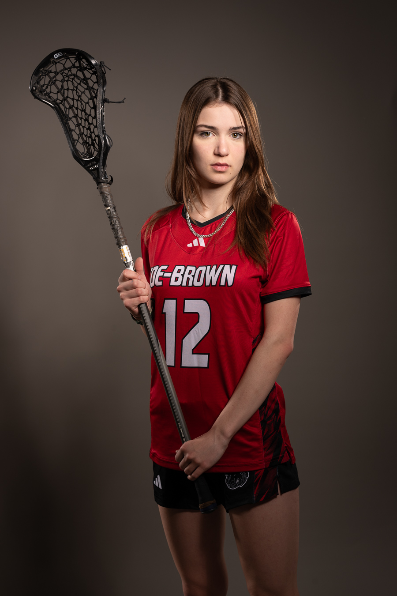
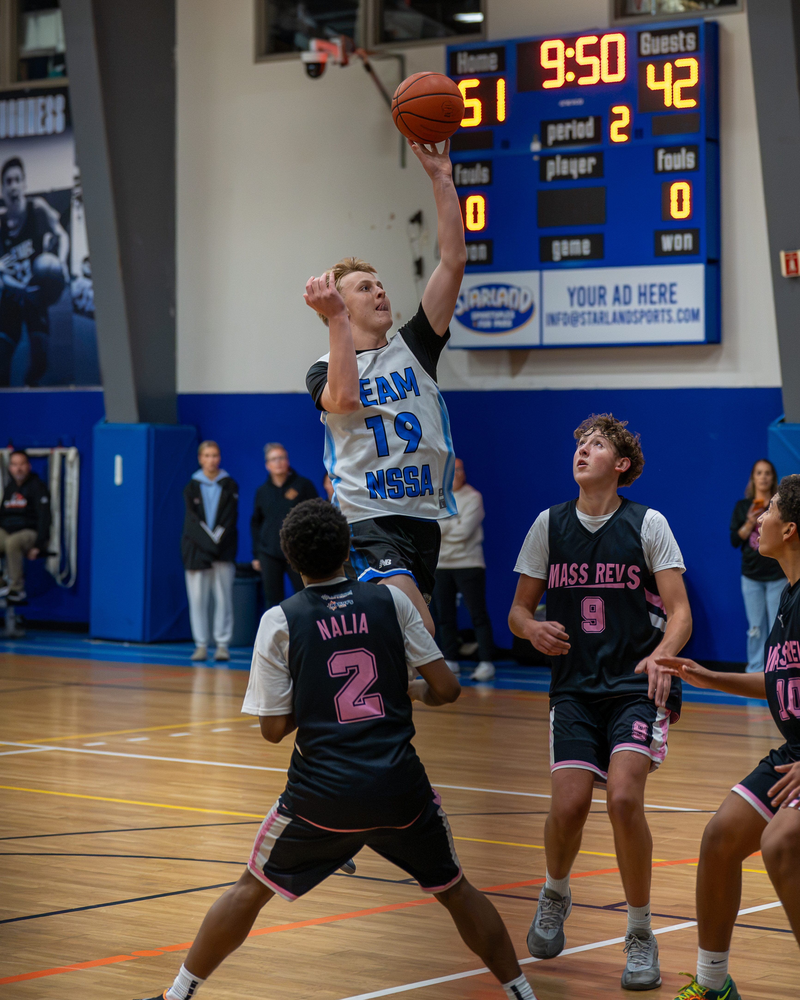
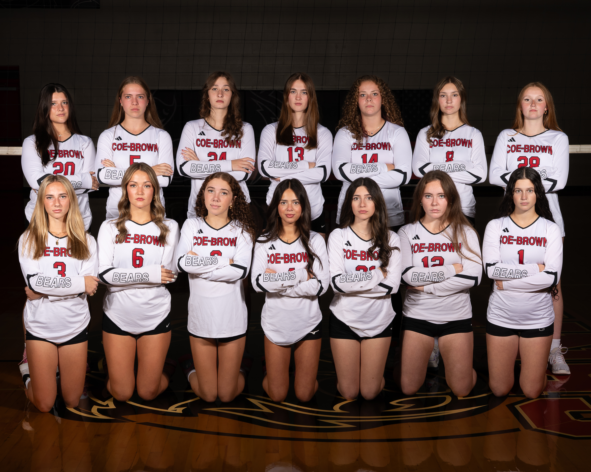
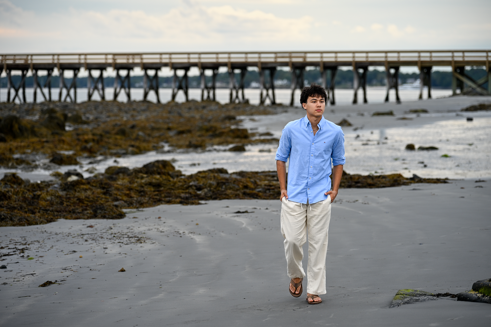

Senior, Sports & Team Photography
in New Hampshire
Hi, I'm Rob. I photograph high school seniors, athletes, and teams across New Hampshire, from senior portraits and game-day action to full team Media Days and professional headshots. Based in Strafford, NH, and on the sidelines since 2017.
How I Can Help
Every session is built around you, whether you're a senior, an athlete, a team, or a professional.

Senior Portraits
Relaxed, personality-driven sessions with photos you'll actually want to share.
From $150 Explore senior sessions →
Sports Photography
Game-day action and athlete portraits that capture the moments that matter.
From $199 Explore sports photography →
Team Media Day
Polished team and individual portraits for schools, coaches, and programs.
From $499 Explore Media Day →Headshots & Branding
Clean, professional headshots and personal branding images.
From $175 Explore headshots →Recent Work
A few favorites from senior sessions, game days, and Media Days across New Hampshire.


It Started on the Sidelines
In 2017, I started bringing a camera to my son's games at Coe-Brown Northwood Academy. Before long, players were using my photos as profile pictures, and parents were asking how they could get them. That's how 603 In Focus began. Today I bring that same care to every senior session, game, and Media Day.
How It Works
Simple from start to finish, whatever kind of session you book.
Book your session
Choose your session and date online. A $50 retainer reserves your spot and goes toward your session.
Enjoy your session
Relaxed, guided, and planned around you. I'll send prep tips ahead of time so you know exactly what to expect.
Get your gallery
Your professionally edited images arrive in a private online gallery, typically within 1–2 weeks, with a print release included.
What Clients Say
Families, athletes, and programs across New Hampshire.
"I cannot say enough good things about Rob Mulligan and his 603 InFocus business. I hired Rob to do a Media Day with our Spring athletes, and he did a phenomenal job. I would highly recommend him to any Athletic Director or Coach who is looking to have their team(s) done. He is extremely professional and his ability to take pictures and be creative with them is outstanding."
"I had a great experience with 603 in Focus for my son’s senior photos! From start to finish, Rob made Nicholas feel comfortable and confident in front of the camera. Rob was patient, creative and had a great eye for location and poses. I am very happy with our photos and highly recommend 603 in Focus to anyone looking for a senior portrait photographer."
"Rob was absolutely amazing to work with! He made the entire senior photo session relaxed, fun, and effortless, and his talent truly shines through in every single picture. We couldn't be happier with the experience or the stunning photos, and I would recommend Rob to anyone looking for unforgettable senior portraits!"
"I cannot say enough great things about Rob and 603 In Focus Photography. Rob has captured hundreds of amazing images of my son playing sports over the years. Working with Rob to capture my son's senior photos was stress-free and fun. I really enjoyed being able to see all the photos online so quickly. Thank you for capturing these special high school milestones!"
"Rob did an amazing job taking our volleyball teams media day photos! The pictures came out absolutely incredible. He made the whole process really easy and fun. He was super nice and we're all happy with how the photos turned out. I would definitely recommend Rob for any type of photography!"
"Amazing job! I don't think anyone appreciates a great photographer more than a sports parent. Thank you!!!"
"Rob, thank you for all the amazing photos you have taken! They are treasured keepsakes we appreciate it!"
From the Field
Behind-the-scenes stories from recent sessions and game days.

September 27, 2026
Photographer Dad vs. Referee Dad: Shooting My Son's Championship Basketball Game
Read more →
September 14, 2026
Coe-Brown Girls Volleyball Media Day
Read more →
August 30, 2026
Was the Drive to Maine Worth It? A Senior Session at Fort Foster
Read more →Frequently Asked Questions
Choose your session and pick a date on my online booking page. A $50 retainer reserves your date and goes toward your session. Planning a team Media Day? Reach out through my contact page and we'll plan the details together.
I'm based in Strafford, NH, and travel within 25 miles is included, covering towns like Northwood, Barrington, Nottingham, Dover, Durham, and Rochester. I'm happy to travel farther, including the Seacoast and southern Maine. A small travel fee may apply.
Finished galleries are typically delivered within 1–2 weeks. Need them sooner? Rush editing is available for an additional fee.
Yes! Every session includes a print release, so you can order prints through me or use any lab you like.
New Hampshire weather can be unpredictable! I keep a close eye on the forecast and will reach out 24–48 hours before your session if it looks questionable. If the weather doesn't cooperate, we'll reschedule for the next date that works for both of us.
Sports galleries are shared online after the event. In the navigation bar, click on More + and open "Client Galleries", from there you can view or download, and order images from your team or game coverage.
Let's Create Something Worth Remembering
Senior portraits, game-day coverage, team Media Days, or headshots: tell me what you have in mind and I'll take it from there.